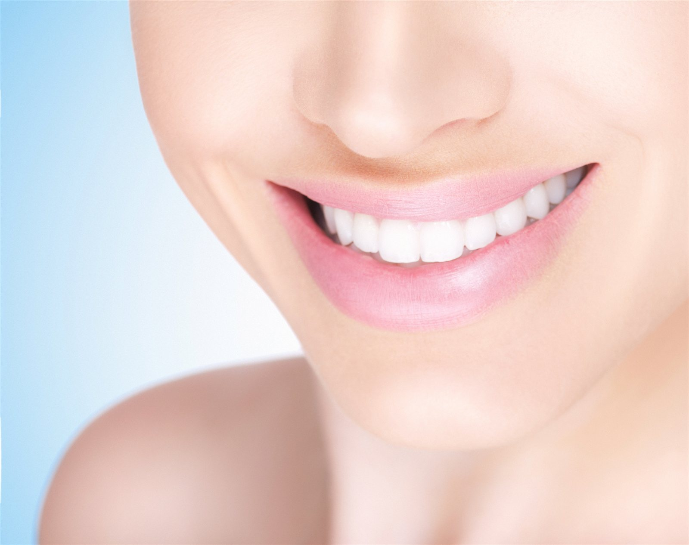
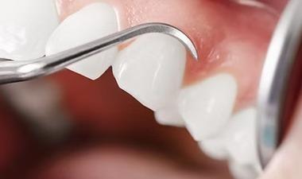
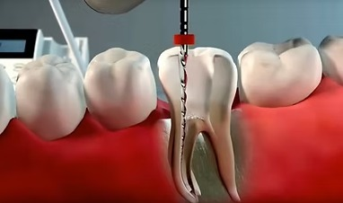
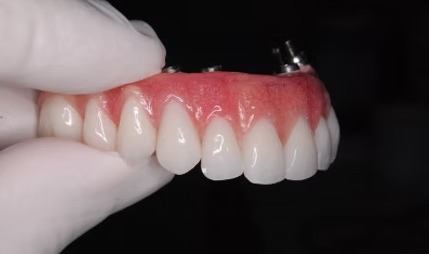
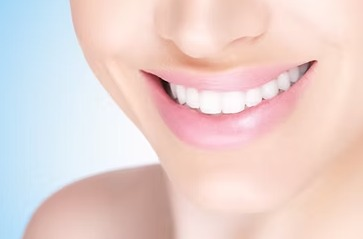
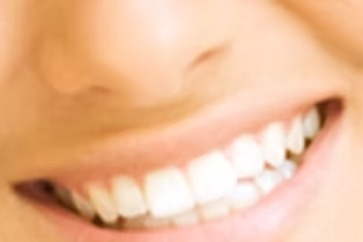

Escuta e acolhimento
Tempo para conhecer você, acolher suas dúvidas e entender suas expectativas.

LIFE ODONTOLOGIA
Um olhar atento para você. Um cuidado completo para o seu sorriso, em cada fase da vida.
Ciência, sensibilidade e atenção.
Porque cuidar vai além do sorriso.

CONHEÇA A LIFE
Um espaço acolhedor, diferentes especialidades e atenção à sua história. Conheça a clínica que reúne cuidado e bem-estar no coração de Montes Claros.
Conheça nossa clínicaNOSSAS ESPECIALIDADES
Conheça algumas das especialidades da Life e descubra todas as possibilidades de cuidado.
A ESSÊNCIA DO NOSSO CUIDADO
Tempo para conhecer você, acolher suas dúvidas e entender suas expectativas.
Diferentes especialidades reunidas para cuidar da saúde e da estética do sorriso.
Um ambiente tranquilo e acolhedor, desde a recepção até o consultório.
CORPO CLÍNICO
Conheça os profissionais que fazem parte da Life Odontologia e as especialidades de cada um.
Conheça nosso corpo clínicoESTAMOS AQUI PARA VOCÊ
TRATAMENTOS LIFE
Implantodontia é a especialidade da Odontologia que recupera espaços edêntulos através da instalação de parafusos de titânio no interior dos ossos maxilar ou mandibular a fim de repor raízes dentárias perdidas.
A indicação de cada tratamento depende de avaliação individual com o cirurgião-dentista.
Agende uma avaliação
TRATAMENTOS LIFE
A periodontia é a especialidade que estuda, previne e trata as doenças do sistema de implantação e suporte dos dentes. A gengiva é o tecido que reveste o osso que sustenta os dentes através do ligamento periodontal. Em virtude da má higiene, consequentemente presença de placa bacteriana, fumo, stress, imunodeficiência e maus hábitos alimentares, a gengiva fica fragilizada à infecção decorrente de bactérias presentes no meio oral. Todos esses fatores isolados ou associados podem levar a uma gengivite que pode progredir para uma periodontite (perda de suporte ósseo) e consequente perda dos elementos dentários.
A indicação de cada tratamento depende de avaliação individual com o cirurgião-dentista.
Agende uma avaliaçãoTRATAMENTOS LIFE
A odontologia moderna oferece uma grande variedade de opções de tratamento para pessoas que buscam melhorar seu sorriso. As opções variam de facetas de porcelana, aparelhos ortodônticos ou mesmo um simples clareamento. Em muitos casos, é necessária uma combinação de técnicas para atingir os melhores resultados.
A indicação de cada tratamento depende de avaliação individual com o cirurgião-dentista.
Agende uma avaliação
TRATAMENTOS LIFE
A endodontia é a especialidade da Odontologia que trata das lesões e doenças da polpa (nervo) e da raiz do dente. Popularmente, endodontia também é chamada de tratamento de canal. É a especialidade que estuda e trata as enfermidades da polpa dentária, de todo o sistema de canais radiculares e dos tecidos periapicais. O tratamento consiste na remoção da polpa dental, uma estrutura viva, que contém, entre outros elementos, nervos e vasos sanguíneos, e substituição por material restaurador.
A indicação de cada tratamento depende de avaliação individual com o cirurgião-dentista.
Agende uma avaliação
TRATAMENTOS LIFE
A prótese dentária é uma especialidade da odontologia que tem como objetivo a reconstrução parcial dos dentes destruídos ou a reposição dos dentes ausentes, garantindo parte da reabilitação oral. A recuperação ou reposição dos elementos dentários pode ser realizada através das diferentes modalidades de prótese: prótese removível ou prótese fixa, tanto sobre dentes quanto sobre implantes. Com as novas tecnologias (sistemas CAD/CAM) e o desenvolvimento das novas cerâmicas (zircônia e cerâmicas de injeção, por exemplo), é possível a realização de trabalhos extremamente naturais e menos invasivos (menor desgaste dentário).
A indicação de cada tratamento depende de avaliação individual com o cirurgião-dentista.
Agende uma avaliaçãoTRATAMENTOS LIFE
A Ortodontia é a especialidade da Odontologia relacionada ao estudo, prevenção e tratamento dos problemas de crescimento, desenvolvimento e amadurecimento da face, dos arcos dentários e da mordida, ou seja, disfunções dento-faciais.
A indicação de cada tratamento depende de avaliação individual com o cirurgião-dentista.
Agende uma avaliação
TRATAMENTOS LIFE
A Harmonização Facial é um conjunto de procedimentos estéticos que tem por objetivo harmonizar os dentes esteticamente e funcionalmente com a boca e com a face. Ela atende à ansiedade e à expectativa das pessoas que buscam um ganho estético facial mais amplo, onde os dentes complementam o sorriso que completa o rosto como um todo, a partir de uma visão mais aprofundada da face na busca de um equilíbrio funcional e estético integrado. Envolve procedimentos como: Bichectomia, Redução de Papada, Lente de Contato Dental, Aparelho Lingual, Aparelho Transparente, Invisalign, Clareamento Dental e muitos outros.
A indicação de cada tratamento depende de avaliação individual com o cirurgião-dentista.
Agende uma avaliaçãoTRATAMENTOS LIFE
A odontogeriatria é uma das especialidades da odontologia que se responsabiliza pela investigação, organização e realização da atividade direcionada à promoção da saúde do idoso. A doença periodontal é grande em idosos, por essa razão é importante a prevenção para evitar futuros problemas bucais.
A indicação de cada tratamento depende de avaliação individual com o cirurgião-dentista.
Agende uma avaliaçãoTRATAMENTOS LIFE
A disfunção temporomandibular e a dor orofacial são alterações patológicas da articulação temporomandibular (ATM). Os sintomas mais comuns são: dificuldades, dor ou limitação para abrir ou movimentar a boca, ruído nas ATM, travamento da mandíbula, dores ou cansaço nos músculos da face, ouvido e região.
A indicação de cada tratamento depende de avaliação individual com o cirurgião-dentista.
Agende uma avaliação
TRATAMENTOS LIFE
A Reabilitação Oral consiste em uma atuação multidisciplinar, onde são realizados procedimentos diversos para devolver a função e a estética dentária do paciente. Tudo começa por um criterioso exame clínico, estudo de imagens (radiografias, ressonâncias, tomografias) e avaliação do tipo de oclusão, levando-se sempre em conta a expectativa e os anseios do paciente. Através de modelos de gesso, é possível fazer um ensaio de diagnóstico, planejando com técnicas modernas os resultados possíveis para cada caso clínico. Em alguns casos se realiza a técnica de mock-up para uma simulação com alto grau de perfeição estética. Os benefícios do tratamento não se restringem somente à estética, mas também à qualidade de vida e bem-estar dos pacientes, devolvendo uma mastigação correta e satisfatória. Com indicações que vão desde pacientes com bruxismo ou desgaste decorrente do tempo, até perda de elementos pela doença periodontal ou perda de dentes precoce, e necessidade de correção através de implantes osseointegrados unitários ou múltiplos, o sucesso do tratamento é uma realidade ao alcance de todos os insatisfeitos com o próprio sorriso.
A indicação de cada tratamento depende de avaliação individual com o cirurgião-dentista.
Agende uma avaliaçãoTRATAMENTOS LIFE
Com a evolução das propriedades mecânicas das cerâmicas odontológicas, hoje é possível construir estruturas cerâmicas ultra-finas (lentes de contato dentárias) com apenas 0,2 mm de espessura, que possibilitam um tratamento altamente estético e minimamente invasivo, com mínimo desgaste ou, em determinadas situações, nenhum desgaste dentário. São normalmente indicadas por razões estéticas, sendo capazes de corrigir desde pequenas imperfeições de forma dental até dentes anteriores com pequenas fraturas ou com diastemas. Podem ser usadas ainda para disfarçar manchas dentárias, pequenas descolorações e para aumentar o tamanho dos dentes. São confeccionadas em laboratório a partir de um modelo obtido em consultório e depois "coladas" aos dentes com um cimento resinoso — garantia de um sorriso natural e mais confiante.
A indicação de cada tratamento depende de avaliação individual com o cirurgião-dentista.
Agende uma avaliação